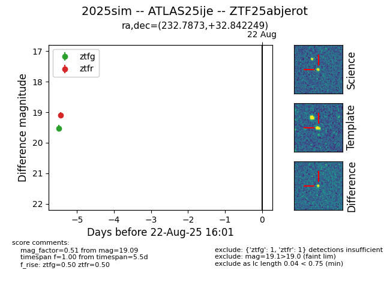

Target 2025sim at 2025-08-22 16:01, see:
FINK: fink-portal.org/ZTF25abjerot
Lasair: lasair-ztf.lsst.ac.uk/objects/ZTF25abjerot
ALeRCE: alerce.online/object/ZTF25abjerot
TNS: wis-tns.org/object/2025sim
YSE: ziggy.ucolick.org/yse/transient_detail/2025sim
alt names
ZTF25abjerot (ztf,alerce)
2025sim (tns,yse)
ATLAS25ije (atlas)
coordinates:
equatorial (ra, dec) = (232.7873,+32.84225)
galactic (l, b) = (52.2360,+55.15479)
photometry
last ztfg=19.52, ztfr=19.09
1 ztfg, 1 ztfr detections
